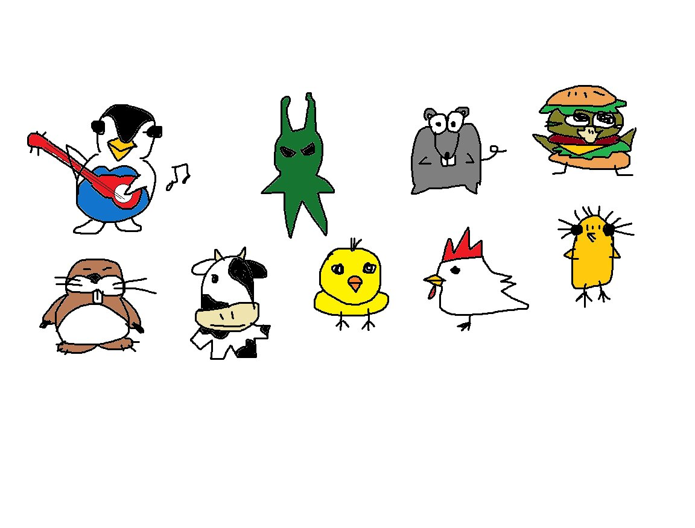

3D Graphics

The goal of this project was to build a foundational rendering pipeline to display and animate a simple quad using OpenGL 3.3 and WebGL 2. By ensuring it runs smoothly on both desktop and web browsers, this project lays the groundwork for more advanced rendering features and future engine development.
IndexBuffer, VertexBuffer, VertexArray, and
Texture classes for efficient graphics data management.One of the biggest challenges during this project was designing a solid "wrapper" structure rather than taking the easy route of using direct OpenGL calls. It took extra thought to build a system flexible enough for future updates. Additionally, making sure the code compiled perfectly on both desktop and WebGL 2 environments taught me a lot about the nuances of cross-platform graphics programming and shader syntax. The most rewarding part of the project, however, was rendering the textures after all. I used character drawings created by my girlfriend as the texture images. Seeing her artwork smoothly animate on the screen through a rendering pipeline I built from scratch made the technical achievement feel special.